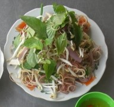

The "Bún nước lèo" dish, delicious and unique, is always the top choice for those who appreciate pure culinary delights.
This is a specialty of the Khmer people, and "Bún nước lèo" has evolved into a culinary masterpiece highly favored in many regions.
However, "Bún nước lèo" in Trà Vinh is truly rich and distinctive, leaving a lasting impression on those who savor it.
The secret to the success of this dish begins with the selection of prahok, a delicate fish paste made from various types of fish.
Prahok is the soul of "Bún nước lèo", imparting its unique flavor and dissolving instantly when it comes into contact with boiling water.
Makers of prahok must adhere to strict standards and often use clay pots to cook the paste, preserving its distinct flavor.
Many also add
fresh coconut water
and
crushed lemongrass
to the broth, creating a layer of exquisite fragrance.
"Bún nước lèo" is not just a hearty, rustic dish but also a culinary symbol proudly showcased by the people of Trà Vinh.
It doesn't only attract local visitors but has also become an emblem of Trà Vinh, making tourists from all around the world aware and eager to try it at least once.
Exploring the land of rivers and waters in the early morning and savoring a steaming bowl of "Bún nước lèo" is an unforgettable experience, taking you through various levels of a gustatory journey.
The Way To Make "Bún Nước Lèo":
The traditional way of doing things:
Ingredients:
1.
Fresh rice vermicelli
2.
Prahok
: 400g
3.
Straw mushroom
: 300g
4.
Auttum crosscus
: 50g
5.
Lemongrass, finely minced lemongrass, chili
6.
Pig's blood
: 500g
7.
Snakehead fish
:1
8.
Side vegetables:
Banana blossom, bean sprouts, chives...
9.
Spices
Sugar, salt, MSG,...
The steps to follow:
Step 1: Prepare the ingredients
Cut the lemongrass and pound it to release the fragrance.
Divide the auttum crosscus into two parts: one part peel, finely chop it along with the chili, and mix it with the finely chopped lemongrass.
Grill the remaining part to bring out the aroma.
Take 300 grams of straw mushrooms, remove the outer layer, and wash them thoroughly.
Then, finely chop the straw mushrooms.
Clean 500g of pig's blood, cut it into bite-sized pieces, and briefly blanch them.
Wash all the accompanying vegetables and add them to a pot, mixing them thoroughly.
Step 2: Boil blood
We bring the pot of boiling water to a boil and blanch the meat briefly to prevent it from becoming fishy.
Step 3: Boil the broth
Put 400g of prahok in a pot and cook until the fish paste boils and dissolves.
Once the paste releases its aroma and the meat dissolves, turn off the heat.
Boil 4 liters of water in another pot and add the crushed lemongrass.
When the water is boiling, add snakehead fish, finely chopped lemongrass after mixing, and crushed, grilled auttum crosscus into the pot.
After boiling for some time, the fish in the pot will be cooked.
Remove all the fish and add the straw mushrooms.
Strain the previously boiled fish paste into the pot.
Add 1,5 teaspoons of MSG.
After removing the fish, proceed to separate the meat from the bones, being careful not to leave any bones.
Add the blood, which has been boiled, and the separated fish meat to the broth.
Now, all you have to do is wait for the broth to boil for about 5 minutes before enjoying it.
Source: excerpt from the YouTube channel "ALO TRÀ VINH"
The Way To Modify:
"Bún nước lèo" in Trà Vinh is a symbolic dish of southern Vietnam.
The aromatic bowl of noodles and the delectable broth create an irresistible flavor universe.
But the story doesn't stop there.
In the innovative land of Trà Vinh, people are always ready to refresh and improve.
"Bún nước lèo" in Trà Vinh has undergone a creative transformation, evolving into countless variations to cater to the preferences and needs of every diner.
Vegan "Bún nước lèo"
immerses the soul in a delicious and mesmerizing vegetarian dish, featuring a fragrant and delicate broth made from leafy greens and mushrooms.
"Bún mắm nước lèo", instead of the traditional broth, introduces a rich and salty flavor, blending harmoniously with noodles and seafood.
"Bún nước lèo" with fish and grilled meat, a unique creation, awakens the palate with the harmonious combination of fresh fish and savory grilled meat.
"Bún nước lèo" with henicorhynchus offers the distinctive taste of this fish, incorporated into the bowl of "Bún nước lèo", providing a fresh experience.
Finally, the special "Bún nước lèo" from restaurants and eateries represents the exquisite creativity of the chefs, ensuring that each bowl is a unique culinary masterpiece.
"Bún nước lèo" in Trà Vinh is not just a meal but a symbol of diversity, creativity, and the fusion of various flavors.
When you set foot in Trà Vinh, you not only savor a delicious dish but also embark on a journey to explore the richness and uniqueness of the local cuisine.
How To Make Dipping Sauce:
Chili vinegar:
We take half a tablespoon of salt and add it to the water, then boil the chili for about 2 minutes. Add 100ml of vinegar, a tablespoon of sugar, and a teaspoon of MSG, stir until well dissolved.
After boiling the chili, put it in a blender along with garlic.
Blend until smooth and then mix it with the vinegar mixture, and you'll have a delicious chili vinegar mixture to make your food even more flavorful and explosive for your taste buds.
Source: excerpt from the YouTube channel "Sống Khỏe"
Chili salt:
We put rock salt in a pan and roast it.
While roasting, we also crush it.
When the salt becomes smooth and starts to dry, we add ground chili and stir it well to evenly distribute the chili into the salt.
Remember to stir it continuously because if you don't, the salt will burn.
After the salt mixture is evenly roasted, we add finely ground sugar.
After about 3-5 minutes, when the mixture has a spicy and aromatic scent, we turn off the stove and can transfer it into a jar for storage.
Source: excerpt from the YouTube channel "Anh Lee BTR"
Enjoy The Product:
In a bowl, you select each silky strand of noodles, filling it up. Add in fresh vegetables,
banana blossom,
delicious water spinach and crispy
water lily,
combining to create a beautiful and fresh natural picture. When you ladle out steaming hot broth from
the pot,
each drop of broth invades the space and creates a distinct aroma, making the noodle soup pot more enticing than ever.
Diners have the freedom to customize their taste.
They can add chili vinegar to make the dish tangy, spicy, and even more delicious.
You also won't want to miss out on enticing side dishes like
roasted pork
and
blood sausage,
spring rolls.
Crispy and delicious roasted pork, with its flavorful blood used to create a delightful dipping sauce with vinegar and chili, offers an incredibly appealing taste. In Trà Vinh, those who make "Bún nước lèo" are even more meticulous when it comes to preparing
the finely shredded vegetables,
such as banana blossoms, water lily, and water spinach, creating a uniquely harmonious blend.
In cashew season, people even crush some cashew nuts to sprinkle on salads, creating an
irresistible flavor.
"Bún nước lèo" in Trà Vinh is not just an ordinary popular dish, but also a rich and unique culinary masterpiece.
When you have the chance to visit this region, set aside all worries and stop by a roadside eatery. Order a bowl of "Bún nước lèo" and savor it; you'll understand that this dish is not just food but an indispensable part of your journey to explore this remarkable land. Don't miss the opportunity to experience the unique and refined flavor of "Bún nước lèo", a specialty of Trà Vinh.
Prices: Range from 12,000 VND to 20,000 VND.
But the price may increase if you order additional side dishes such as roasted pork, spring rolls, blood sausage,...